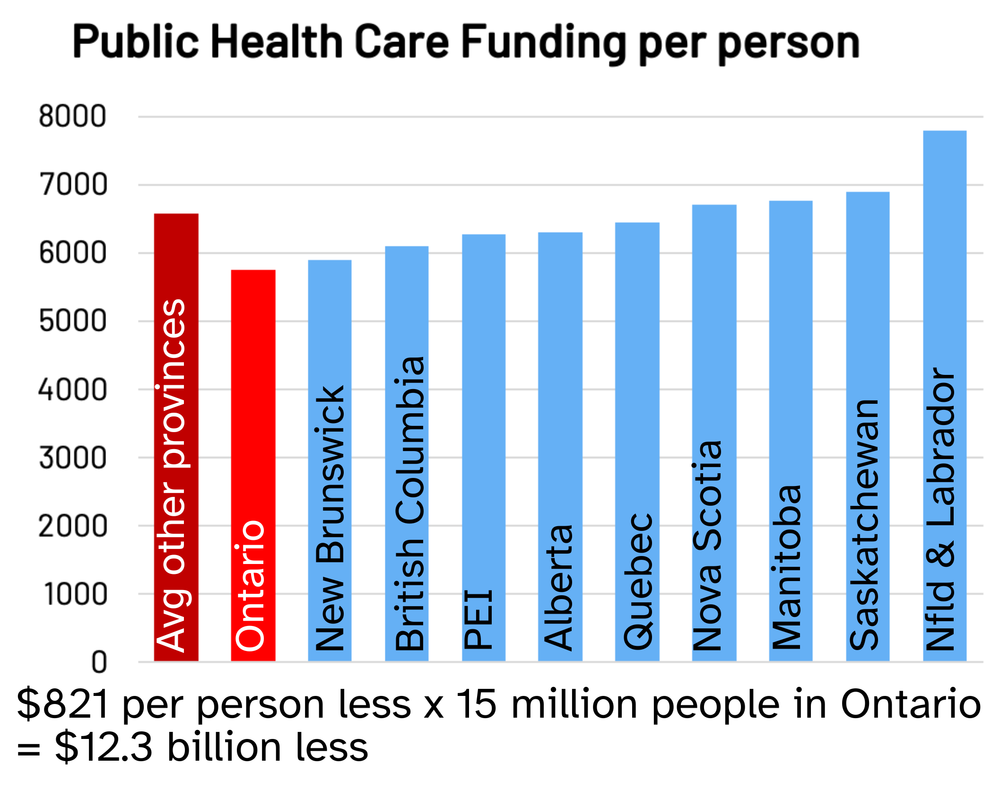

The Ford government is dismantling public hospital services and privatizing them
They are privatizing core services including surgeries, diagnostic testing, nurses and health professionals.
For more than a hundred years, Ontarians built a world-class public hospital system. Under the Ford government, that legacy is being dismantled—for profit.
For 100 years, Ontario has built local public hospitals on a non-profit basis, in the public interest. Under the cover of the pandemic, the Ford government began plans to privatize surgeries and diagnostics. Now they pour millions into private for-profit clinics while imposing real-dollar cuts on public hospitals.
They are privatizing core services including surgeries, diagnostic testing, nurses and health professionals.
For-profit clinics charge hundreds—or thousands—for needed medical care, in violation of our Public Medicare laws.
Learn why common misconceptions about privatization are false.
Every service cut from public hospitals has been privatized. It’s the plan.
30-year licenses to for-profit chains—including the worst, sued for negligence. For-profit homes spend 24% less per resident on care than non-profit homes.
Former Health Minister Christine Elliott became a lobbyist for a corporation that owns a for-profit hospital after leaving office.
The Ford government held hospital funding below inflation all year while more than tripling private clinic funding—then announced a bump only at year’s end.
Source: Government of Ontario, Budget Estimates 2023-24 & 2022-23.
Operating rooms in public hospitals sit empty—while private clinic funding rises 200%+
Ontario funds public hospitals at the lowest rate in Canada.

The Ford government does what it can get away with. Public pressure forced them to backtrack on the Greenbelt scandal—public pressure can stop this too.
Under the skin: How private clinics are embedding illegal user fees into our public health care system. Read patient stories and evidence on our home page.
Stand with more than 500 grassroots organizations across Ontario.